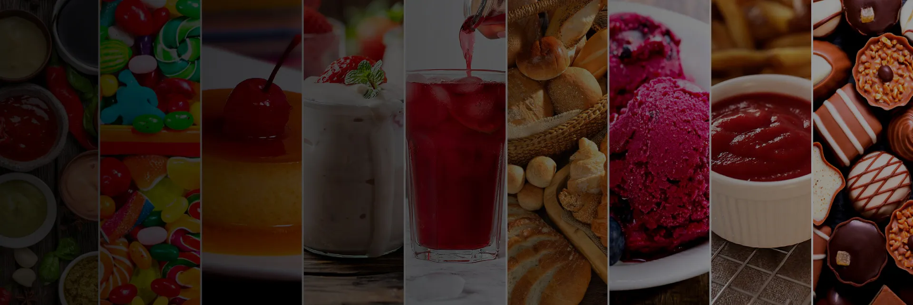

Argos
Argos
Natural
Somos parte de la solución para dar respuesta a tus necesidades.


La Goma de Tara es un polvo fino obtenido de la semilla de la vaina de tara Caesalpinia spinosa (Molina) Kuntze, por un proceso físico-mecánico que se inicia
con la selección de semillas, seguido de un proceso de tostado, partido, molienda y tamizado.
Es un aditivo alimentario que actúa como espesante, gelificante y estabilizante natural.
La Goma Guar es un polímero natural extraído de las semillas de la planta Cyamopsis tetragonoloba, una leguminosa originaria de India y Pakistán, es conocida por sus
propiedades espesantes.
Su destacada capacidad de aumentar la viscosidad de los líquidos la convierte en un espesante eficiente y versátil. Además, muestra una notable
capacidad para formar geles reversibles, los cuales se deshacen al aplicar fuerza o agitación.


Conocido también como Galato de propilo o 3,4,5 - trihidroxibenzoato de propilo, es un antioxidante de uso alimentario.
La síntesis de estos compuestos es generada por medio de una
transesterificación del ácido gálico, obtenido de plantas con alto contenido de taninos.


Nuestros productos estan elaborados bajo estándares internacionales de calidad, contamos con Certificación HACCP, KOSHER y HALAL que garantiza la inocuidad, la calidad y pureza de los insumos que ofrecemos.
Proporcionar soluciones personalizadas y servicio
de excelencia. Trabajamos en estrecha colaboración
con nuestros clientes para entender sus necesidades específicas
y brindarles productos personalizados enfocados en
su aplicación. Nos orgullecemos de ser confiables socios que impulsen su éxito y
crecimiento en el mercado.
Nuestra pasión por la innovación nos guía en cada
aspecto de nuestro negocio, siempre buscando
mejorar y adaptarnos a las demandas cambiantes
de la industria alimentaria.
Ser reconocidos como el referente de excelencia
en la industria de insumos alimentarios a nivel
nacional. Ser líderes en calidad, innovación y
servicio al cliente, ofreciendo soluciones a medida
que contribuyan al crecimiento y la rentabilidad
de nuestros socios comerciales.
Establecer relaciones de confianza a largo plazo,
basadas en la transparencia y el compromiso
mutuo, para convertirnos en el proveedor preferido
en nuestra industria.
La capacidad y voluntad de la empresa para la gestión.
En Argos Natural, creemos en el trato digno, el respeto a los compromisos adquiridos y la promoción de un excelente clima laboral para nuestros trabajadores. Buscamos su determinación en el proyecto empresarial a través de un trato justo, participación, estabilidad laboral, igualdad de oportunidades, condiciones adecuadas y desarrollo de competencias para mejorar su autonomía.
La máxima seguridad constituye un objetivo prioritario y constante en Argos Natural, actuando permanentemente en la mejora de las instalaciones, equipos, procesos y sistemas de trabajo.
La capacidad y voluntad de la empresa de asumir y propiciar el cambio continuo de productos y procesos para ser flexibles, reaccionando y anticipándonos incluso, a la demanda de los mercados, adaptando y mejorando constantemente nuestros productos y procesos.
En Argos Natural respetamos y protegemos el entorno natural que nos ofrecen nuestras materias primas. Potenciamos el desarrollo sostenible a través de la eficiencia energética, la minimización de los impactos ambientales y los consumos, la prevención de la contaminación, y la sensibilización de todos nuestros grupos de interés.